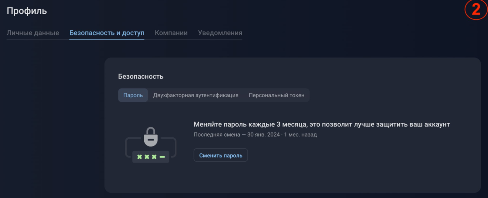

Направления цифровых угроз:
Работа с платформой поделена на несколько модулей:
Антимошенничество
Работа модуля направлена на выявление ресурсов, связанных с нелигитимным использованием цифровых материалов компании и её бренда в мошеннических или рекламных целях. Платформа сканирует подозрительные домены, фейковые аккаунты в социальных сетях и фишинговые страницы, представляющие ловушку для посетителей и несущие репутационные риски компании.Антиконтрафакт
Представляет собой набор инструментов для борьбы с контрафактной продукцией, распространяющейся по сети. Для этого модуль отслеживает интернет-пространство и, используя технологии сканирования, отбирает подозрительные источники. После формируется отчёт о выявленных случаях контрафакта, который можно использовать для дальнейших юридических действий против нарушителей. Также модуль имеет возможность отправки писем в предприятия, осуществляющие продажу контрафактной продукции.Антипиратство
Для борьбы с пиратством и нарушениями интеллектуальной собственности используется антипиратский модуль. Его функционал включает в себя выявление и предотвращение распространения защищенных авторским правом материалов. Подобный подход способствует уменьшению случаев незаконного использования цифровых активов компании и снижению рисков понести репутационные убытки.Выявление утечек данных
Человеческого мониторинга недостаточно для проведения качественных и многочисленных проверок утечек информации. Данный модуль обнаруживает источники нарушения конфиденциальности, опубликованные в сети.Защита VIP-персон
Модуль проверяет всю доступную персональную информацию о личности в интернете: фейковые аккаунты, дезинформирующие материалы и утечки. Затем сортирует данные по степени угрозы.Глоссарий
| Брандмауэр | Система безопасности, которая контролирует входящий и исходящий сетевой трафик. Защищает сеть от несанкционированного доступа и атак. |
| Домен | Уникальное символьное имя, соответствующее IP-адресу ресурса в Интернете. ( Пример: www.facct.ru) |
| Прокси-сервер | Промежуточный сервер, осуществляющий обмен информацией между пользователем и интернет-ресурсом. Обеспечивает безопасность передачи данных и контролирует сетевой трафик. |
| Сигнатурный анализ | Метод обнаружения угроз, основанный на выявлении характерных признаков мошеннических схем в Интернете путем сравнения ресурсов с выявленными признаками. |
| Фишинг | Метод мошенничества, основанный на получении доступа к ценным цифровым активам и конфиденциальной информации пользователя. |
| DNS-сервер | Сервер, который преобразует доменные имена в IP-адреса, позволяя пользователям легко находить веб-сайты. |
| IDS (Intrusion Detection System) | Система обнаружения вторжений, которая мониторит сетевой трафик и системы на предмет подозрительной активности и потенциальных угроз. |
| IP-адрес | Уникальный числовой идентификатор, присвоенный каждому устройству в сети. Позволяет пользователю отправлять и получать данные. |
| SSL (Secure Sockets Layer) | Протокол, обеспечивающий шифрование данных между пользователем и сервером, что гарантирует безопасность передачи информации. |
| SSH (Secure Shell) | Cетевой протокол, обеспечивающий безопасное удаленное взаимодействие между сервером и клиентом. Позволяет управлять и обмениваться данными. |
Инструкция по первичной настройке пользователя:
1. Для настройки учетной записи сначала войдите в профиль.Личные данные
Безопасность
В разделе "Безопасность" доступны три категории: Пароль, Двухфакторная аутентификация и Персональный токен. В категории "Пароль" нажмите "Сменить пароль": После его подтверждения появится уведомление о успешном создании токена. В текущем окне будет отображен ваш персональный API-токен, который можно скопировать для дальнейшего использования.
Уведомления
В разделе "Уведомления" представлен список типов уведомлений, которые вы можете получать на свой электронный адрес.